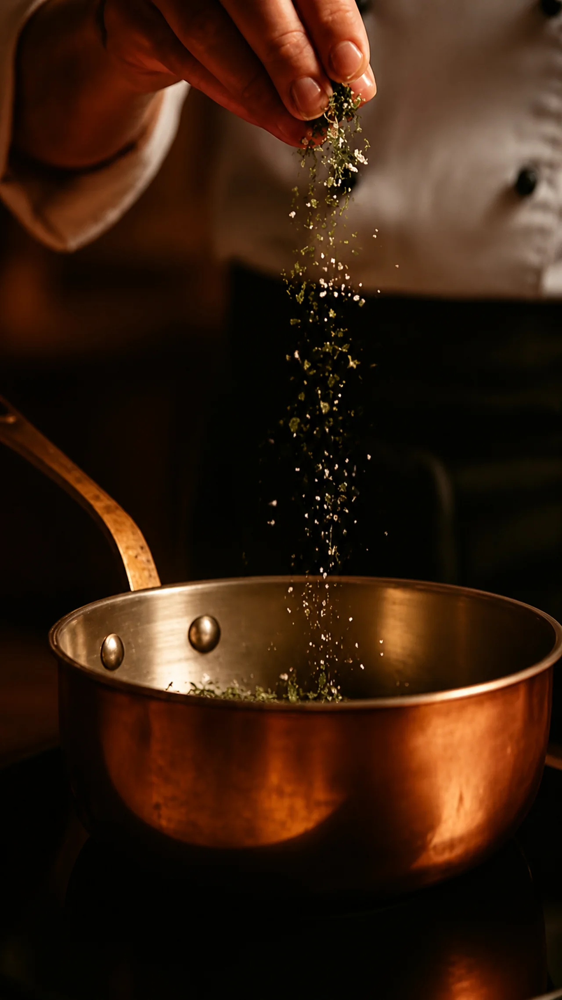
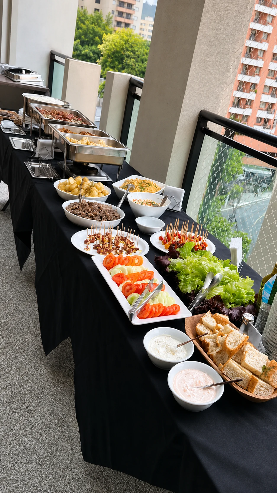
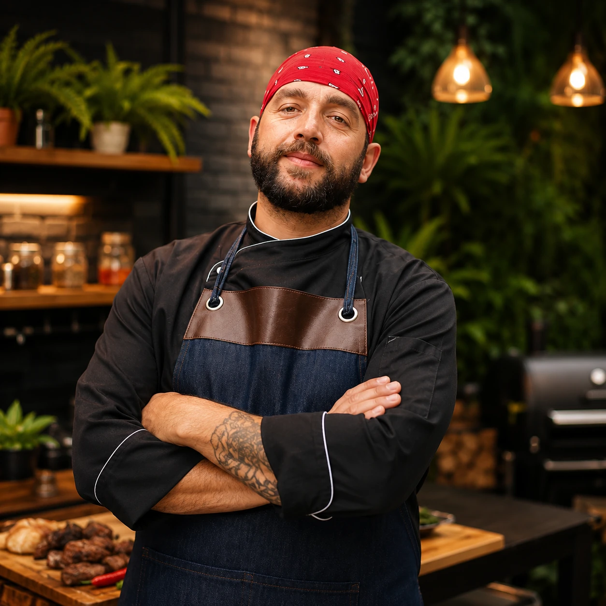
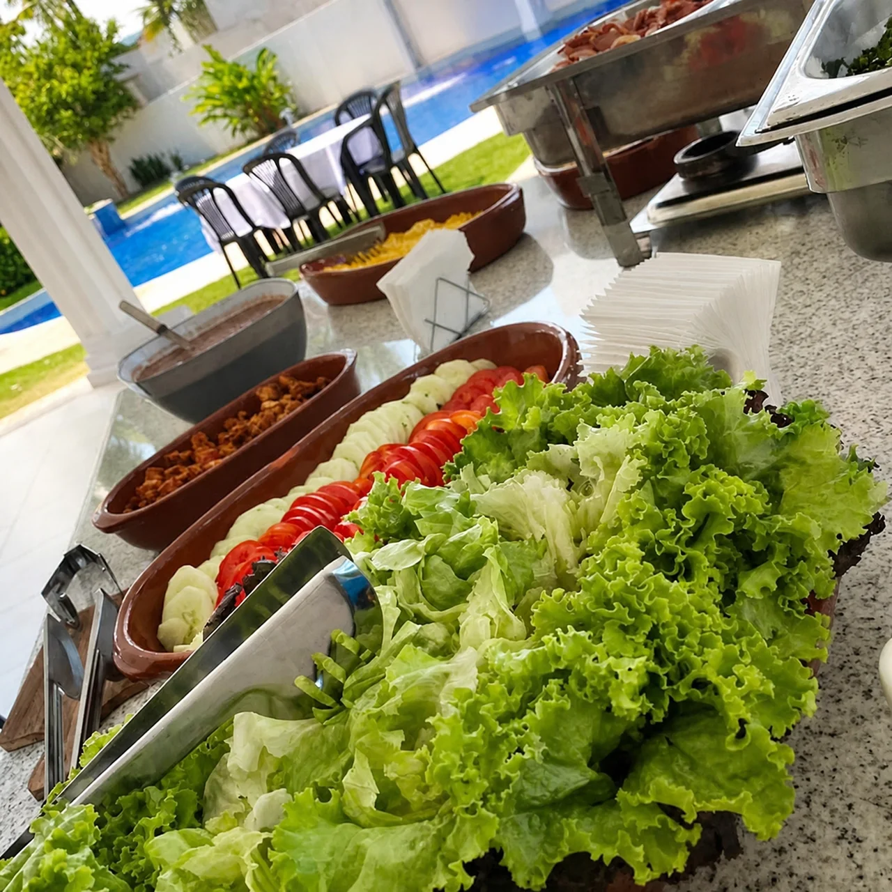
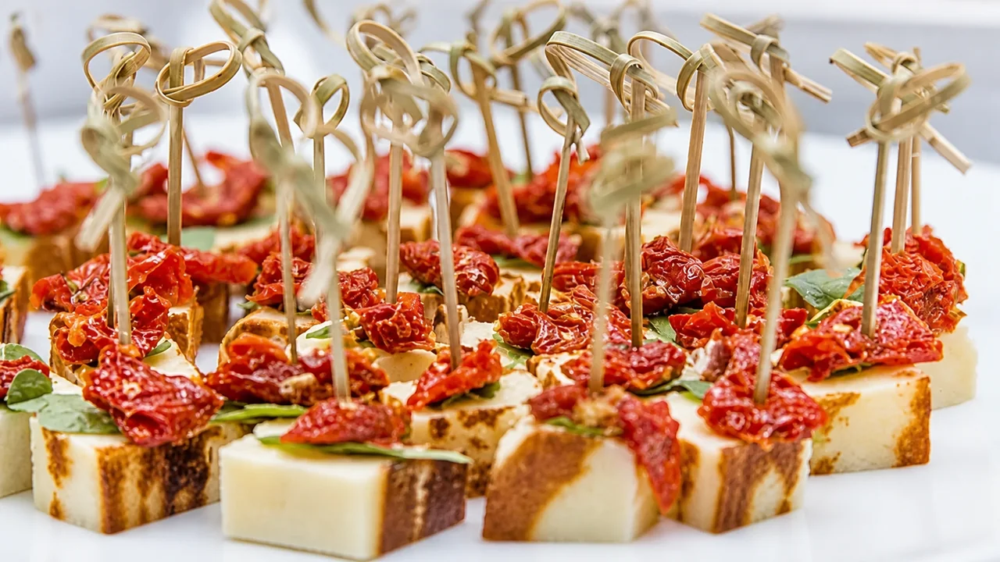
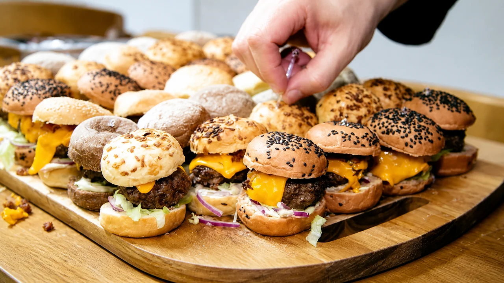

Cozinha movel personalizada
Seu evento,
a sua maneira.
Do churrasco às celebrações à mesa. Cozinha autoral, finalizada no seu evento e pensada em cada detalhe para receber bem.
feita à mesa
Desde 2009criando encontros com sabor
Capital · Interior · Litoralatendimento em São Paulo
Grandes empresasexperiência em eventos corporativos
Gourmet at home
O restaurante
vai ate voce.
Mais do que servir, criamos o clima, o sabor e a memória que ficam depois do último prato.
Da escolha do cardápio à finalização no local, cada etapa é pensada para o estilo do seu evento, o perfil dos convidados e a atmosfera que você deseja criar.
Entenda como funciona


Chef Reinaldo QuoosPaixao sem medida
Cozinhar comecou
como gosto. Virou oficio.
“A arte do Gourmet está em oferecer ao paladar o sabor que os olhos prometem.”
O gosto por cozinhar se transformou em profissão. Em 2009, Reinaldo criou o Gourmet at Home para levar uma cozinha próxima e cheia de personalidade a encontros particulares e eventos de empresas. O cuidado começa na conversa e continua até a finalização de cada prato.
Acompanhe os bastidoresSimples para voce.
Impecavel para todos.
Você aproveita os convidados. Nós cuidamos para que o serviço acompanhe o ritmo do evento do começo ao fim.
-
01
Uma boa conversa
Entendemos ocasião, local, data, número de convidados, preferências e necessidades especiais.
-
02
Curadoria do evento
Alinhamos menu, equipe, logística e materiais. Louças, talheres e profissionais de apoio são dimensionados conforme a necessidade e detalhados na proposta.
-
03
Cozinha em cena
Os ingredientes recebem um preparo cuidadoso, seguido de transporte, finalização e serviço no local, conforme o formato combinado.
Gastronomia para empresas
A sua marca recebe.
A nossa cozinha cuida.
Experiencia com empresas de grande porte.
Da reunião de negócios à confraternização da equipe, levamos o mesmo cuidado autoral para ocasiões que representam a sua empresa. Menu e serviço são planejados de acordo com o público, o espaço e a programação.
Planejar evento corporativoReunioes & encontros
Coffee breaks e refeições que acompanham a agenda.
Treinamentos & equipes
Uma pausa bem cuidada para reunir pessoas.
Confraternizacoes
Churrasco, happy hour e menus para celebrar juntos.



Acervo de eventos e preparos da marca, com tratamento e ampliacao digital por IA.
Algumas respostas.
E uma conversa.
Se a sua dúvida não estiver aqui, fale diretamente com o chef.
Quais regioes sao atendidas?
Atendemos São Paulo Capital, interior e litoral. A disponibilidade e a logística são confirmadas de acordo com a data e o local do evento.
O cardapio pode ser personalizado?
Sim. O menu é criado a partir do perfil do evento, do número de convidados e das suas preferências. Informe restrições e alergias já no primeiro contato para avaliarmos a viabilidade e os cuidados necessários.
Equipe e loucas estao incluidas?
A necessidade de garçons, copeiras, auxiliares, louças, talheres e outros materiais é avaliada no planejamento. O que estiver incluído será detalhado na proposta, sem pressupor um pacote único.
Preciso ter uma cozinha no local?
A estrutura necessária depende do menu e do formato de serviço. Conte como é o espaço disponível para alinharmos as condições de preparo, finalização e atendimento antes da contratação.
Como e calculado o orcamento?
Menu, número de convidados, local, data e estrutura de serviço orientam a proposta. Você pode iniciar a conversa mesmo com a data ainda a definir.
Para quais tipos de evento o servico e indicado?
Encontros em casa, confraternizações, aniversários, celebrações, coffee breaks e eventos corporativos. O formato é adaptado à ocasião.
Com quanto tempo de antecedencia devo falar?
Quanto antes, melhor para planejar todos os detalhes. Envie a data desejada pelo WhatsApp e confirmaremos a disponibilidade.
Vamos criar juntos?
Conte como voce
imagina esse momento.
Conte o essencial e receba uma proposta pensada para o seu evento. O próximo passo abre uma mensagem no WhatsApp: você confere os detalhes antes de enviar.
WhatsApp 11 94019-7460Boas conexoes, bons encontros
Nossas parcerias.
Espaços e conexões que fazem parte da nossa história.
Parcerias apresentadas no site institucional da marca. Consulte condições e disponibilidade diretamente com cada espaço.